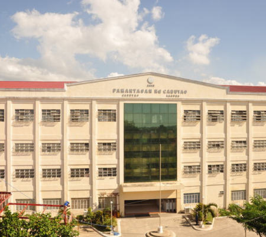

History

It was founded by Mayor Proceso “Etok” D. Aguillo, through the enactment of Municipal Ordinance 2003-059 approved on April 16, 2003.
Founder

The university was officially founded on July 31, 2003, the birthday of its founding mayor, and it was personally inaugurated by President Gloria Macapagal Arroyo on June 19, 2003.
Date Founded